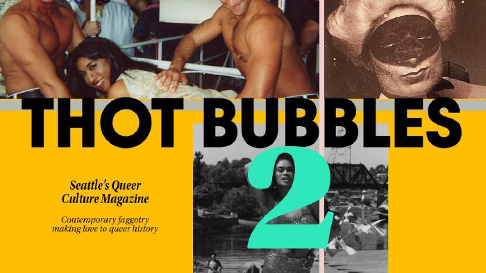
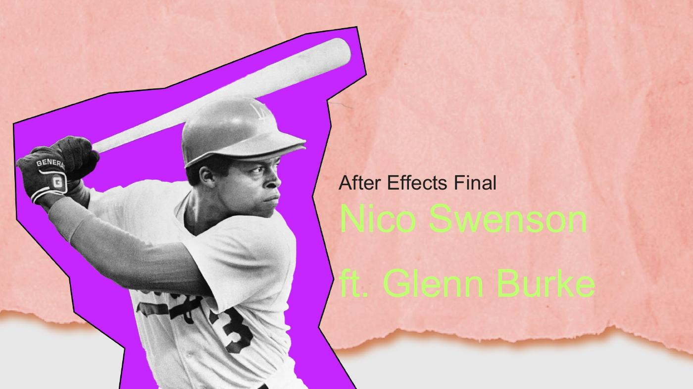
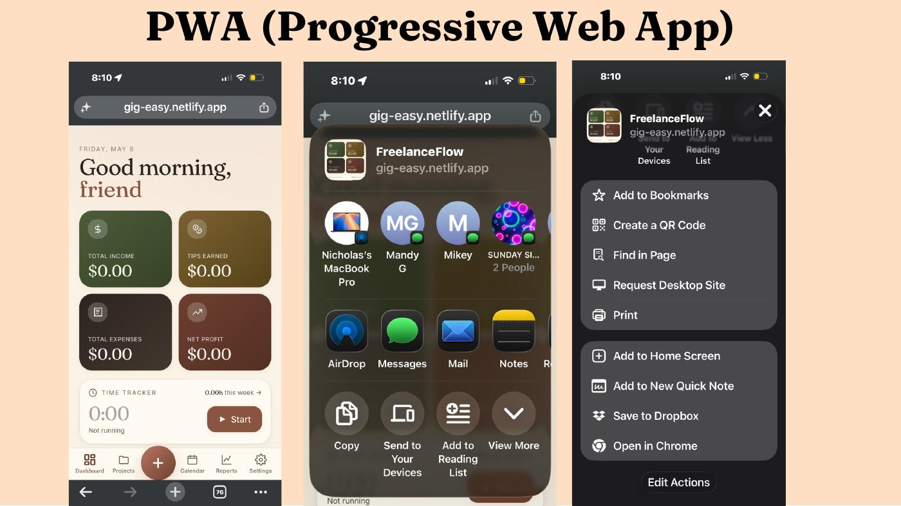
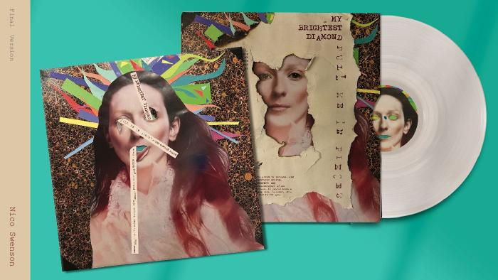

Design work.
Four selected case studies — print, motion, product, and brand. Click in for the full process, problem, palette, and ah-ha moments. Album cover at the bottom, just for fun.
The work.

Thot Bubbles Ma(gay)zine
"Contemporary faggotry making love to queer history." A 60-page LGBTQIA+ magazine, point-of-purchase display, and launch event spanning Capitol Hill to Granite Falls.
→
After Effects Final
ft. Glenn Burke
An animated short about the first openly gay MLB player and credited co-inventor of the high five.
→
Freelance Flow
A mobile-first PWA that collapses income, tips, expenses, projects, and schedule into one tappable home screen.
→
Unicorn Brand Enhancement
& Pride Block Party Promo
"Enter the Jeweled Carnival." A moodier, queer-forward brand system for one of Capitol Hill's beloved nightlife institutions — extended into a full Pride campaign.
→
"My Brightest Diamond" — Album Cover
Collage cover, typographic exploration with Typeka + Courier Tracked, sleeve and vinyl mockup. Opens the PDF.
↗ PDFWant to commission?
Available for editorial illustration, motion, brand identity, and microsite work. Send a brief.
Start a project →